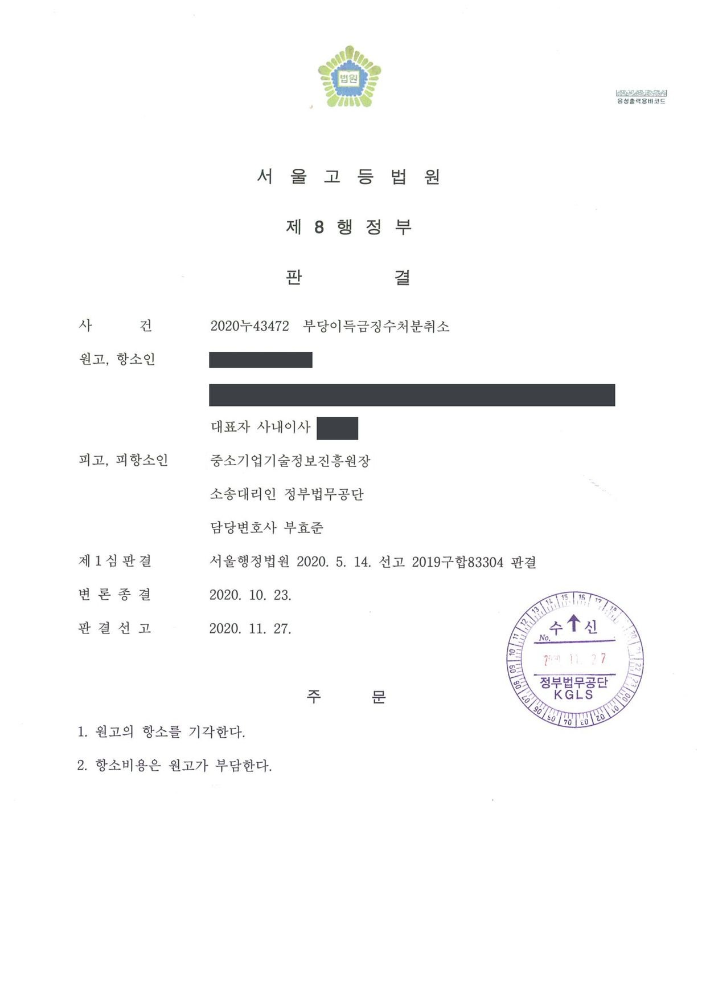

국가연구개발사업 부당이득금 징수처분 취소소송 (1·2심)
서울행정법원 2019구합83304 · 서울고등법원 2020누43472 · 담당변호사 부효준
판결문


사건의 요지
구매조건부 신제품개발사업에서 기존 과제와의 중복성이 문제되어 지급된 출연금을 부당이득으로 징수한 처분에 관하여, 과제 중복성 판단의 적정성과 징수처분의 적법성이 다투어진 사건입니다. 항소심은 변론종결 후 제출된 전문가 의견서를 고려하더라도 제1심의 판단이 정당하다고 보았습니다.
주제별 사례회수금·정산금 당사자소송
사건의 주요 내용
원고는 전자계측기를 제조·판매하는 중소기업으로, 2016년 구매조건부 신제품개발사업(국내수요처 과제)에 차세대 지상파 방송 표준의 시험용 신호 발생·분석 장치를 개발하는 과제를 신청하였습니다. 공고에는 신청과제가 이미 지원된 과제와 유사한 경우 등이 신청제한사유로 명시되어 있었고, 원고는 2016년 12월 국가연구개발사업의 중복지원을 받지 않았다는 '기 지원·기 개발 및 중복지원 여부 확인서'를 제출한 뒤 전문기관과 2년간 총 5억 원의 정부출연금을 지급받는 협약을 체결하였습니다.
그런데 원고는 협약 전인 2016년 10월 다른 중앙행정기관이 공고한 연구개발 프로젝트에 같은 방송 표준의 서비스 검증용 신호 발생·분석 시스템을 개발하는 과제(비교과제)를 신청하여 2016년 11월부터 출연금을 지원받고 있었고, 이 사실을 전문기관에 알리지 않았습니다. 전문기관은 2018년 1월 중복성 검토위원회와 2월 중복성 검토 이의신청위원회에서 두 과제를 '중복'으로 판정하고, 4월 특별평가위원회에서 과제를 '중단'으로, 5월 이의신청 특별평가위원회에서 이의신청 기각으로 결정하였습니다.
전문기관은 2019년 5월 제재조치위원회 심의를 거쳐 구 중소기업 기술혁신 촉진법 제31조 제1항 제6호, 제32조 제1항 등에 따라 '협약 이후 신청자격을 만족하지 않음이 확인되었으나 고의성이 없는 경우'로 보아 2019년 7월 정부출연금 실사용액 가운데 민간지분 반납처리금을 뺀 184,130,543원의 환수처분을 하였고, 원고의 이의신청을 같은 해 9월 기각하였습니다. 원고는 주위적으로 환수처분의 취소, 예비적으로 이의신청 기각의 취소를 구하는 소송을 제기하였고, 부효준 변호사는 피고 전문기관을 대리하였습니다.
쟁점
- 개발 목표·내용의 상당 부분이 겹치지만 결과물의 용도(수신부 시험용과 송신부 분석용)가 다른 두 과제가 '중복 수행 등 부정한 방법을 사용하여 과제 수행기관으로 선정된 경우'에 해당하는지
- 고의가 없다고 평가된 중복 수행에 대하여 정부출연금을 전액 환수한 것이 재량권을 일탈·남용한 것인지
- 환수처분에 대한 이의신청을 기각한 통지가 항고소송의 대상이 되는 처분인지
원고의 주장
- 이 사건 과제와 비교과제의 사업계획서에 일부 중복되는 내용이 있지만, 이 사건 과제는 수신기의 성능 측정을 주된 기능으로 하는 신호생성기(하드웨어)를, 비교과제는 송신기 상태 분석을 주된 기능으로 하는 신호분석기(소프트웨어)를 개발하는 것이어서 개발 결과물이 명백히 다르고 사업계획서에도 차별적인 내용이 있으므로 두 과제를 중복 관계로 볼 수 없다고 주장하였습니다.
- 전문기관이 이미 과제 선정 단계에서 중복심사를 하였음에도 뒤늦게 환수처분을 한 것은 부당하다고 주장하였습니다.
- 항소심에서는 각 위원회 위원들이 한정된 심사시간에 쫓겨 충분한 검토 없이 중복으로 판정하였다면서, 연구소장·대학교수·변리사 등 외부 전문가에게 의뢰하여 받은 '중복되지 않는다'는 소견서를 변론종결 뒤에 제출하였습니다.
부효준 변호사의 주장
- 두 과제의 사업계획서와 진도보고서에 나타난 기술개발 최종목표, 목표달성도 평가지표, 개발 내용이 대부분 일치하고, 기술의 중복 여부는 고도로 전문적인 사항으로서 중복성 검토위원회부터 제재조치위원회까지 여러 단계의 전문가 심의와 충분한 소명 기회를 거쳐 판정된 것이므로 처분사유가 인정된다고 주장하였습니다.
- 원고는 공고에 응할 당시 비교과제의 선정 사실을 알리지 않았고 중복지원을 받지 않았다는 확인서까지 제출하였으므로 뒤늦은 처분이라는 주장은 전제가 잘못되었으며, 전액 환수는 시행령 별표가 정한 기준에 따른 것이고 원고가 받은 출연금을 되돌려 받는 것에 불과하여 재량권 일탈·남용이 아니라고 다투었습니다.
- 예비적 청구에 대하여는, 이의신청 기각은 이의신청을 받아들이지 않는다는 사실을 안내한 것에 불과하여 항고소송의 대상이 되는 처분이 아니므로 그 취소를 구하는 소는 부적법하다고 본안 전 항변을 하였습니다.
법원의 판단
제1심 법원은 구 중소기업 기술혁신 촉진법 제31조 제1항 제6호의 연구부정행위 요건 해당 여부와 제재 내용의 판단에 관하여 행정청에 재량권이 있고, 고도로 전문적인 사항에 관한 전문적 판단은 사실인정에 중대한 오류가 있거나 객관적으로 불합리하지 않은 한 존중되어야 한다는 대법원 판례(2016. 1. 28. 선고 2013두21120 판결)를 전제로, 두 과제의 최종목표·평가지표·개발 내용이 대부분 일치하고 다섯 단계의 위원회 심의에서 충분한 소명 기회가 주어졌으며 위원회 판단의 공정성·전문성·객관성에 문제가 없다고 보았습니다.
원고가 주장하는 차이에 관하여는, 중복 수행 과제의 출연금을 환수하는 취지가 '한정된 정부출연금의 공정하고도 효율적인 분배'에 있으므로 모든 부분이 완전히 일치하여야만 중복 수행에 해당하는 것은 아니고, 새로운 과제의 상당 부분이 기존 과제와 중복되어 출연금 분배에 지장이 생기면 중복 수행 과제라고 하였습니다. 또한 원고가 비교과제 선정 사실을 알리지 않고 중복지원이 없다는 서약서까지 작성하였으므로 뒤늦은 처분이라는 주장은 받아들이지 않았고, 전액 환수는 시행령 별표의 기준에 따른 것으로서 받았던 출연금을 회수하는 것에 불과하고 연구결과물에 관한 권리도 잃지 않으므로 재량권 일탈·남용이 아니라고 하였습니다.
이의신청 기각의 취소를 구하는 예비적 청구는, 이의신청을 받아들이지 않는다는 사실을 안내한 것에 불과하여 원고의 권리·의무에 직접적인 변동을 가져오는 처분이 아니라는 이유로 각하되었습니다. 항소심은 원고가 변론종결 뒤 제출한 외부 전문가 소견서는 원고의 일방적인 의뢰에 따라 작성된 것이어서 그대로 믿기 어렵다고 하면서 제1심판결의 이유를 그대로 인용하여 항소를 기각하였고, 원고는 항소심에서 청구를 변경하여 주위적 청구만을 유지하였습니다.
그리고 행정청이 관계 법령이 정하는 바에 따라 고도로 전문적인 사항에 관하여 전문적인 판단을 하였다면, 판단의 기초가 된 사실인정에 중대한 오류가 있거나 판단이 객관적으로 불합리하거나 부당하다는 등의 특별한 사정이 없는 한 이는 존중되어야 한다. 또한 행정청이 위와 같은 전문적인 판단에 기초하여 재량권의 행사로서 한 처분은 비례의 원칙을 위반하거나 사회통념상 현저하게 타당성을 잃는 등 재량권을 일탈하거나 남용한 것이 아닌 이상 위법하다고 볼 수 없다(대법원 2016. 1. 28. 선고 2013두21120 판결 등 참조).
서울행정법원 2019구합83304 판결 이유 '4. 나. 관련 법령 및 법리' 2) 부분(항소심이 그대로 인용)
그러나 구 중소기업기술혁신법 시행령이 '중복 수행' 과제에 관한 정부출연금 환수를 규정한 이유가 '한정된 정부출연금의 공정하고도 효율적인 분배'에 있다는 점을 고려한다면, 반드시 대상연구들의 모든 부분이 완전하게 일치하여야만 '중복 수행' 과제에 해당한다고 볼 것은 아니다. 새로운 과제의 상당 부분이 기존 과제의 내용과 중복되어 정부출연금의 분배에 지장이 생긴다고 볼 수 있다면, 새로운 과제는 '중복 수행' 과제에 해당한다고 볼 수 있다.
서울행정법원 2019구합83304 판결 이유 '4. 다. 판단' 1) ④ 부분(항소심이 그대로 인용)
나아가 피고가 정부출연금의 환수 범위를 '전액'으로 정한 것이 재량권의 일탈ㆍ남용이 아닌지 살피건대, 구 중소기업기술혁신법 시행령 제21조 제1항 [별표 2] 제6호 (다)목은 출연금의 환수범위를 '전액'으로 정하고 있는 점, 이 사건 처분은 원고가 받았던 정부출연금을 다시 회수하는 것에 불과할 뿐, 추가적인 제재를 가하는 것이 아닌 점, 원고는 이 사건 과제의 연구결과물에 관한 권리를 잃지 아니하는 점(협약서 제8조)에 비추어 보면, 이 사건 처분을 두고 재량권의 일탈ㆍ남용이라고 볼 수는 없다.
서울행정법원 2019구합83304 판결 이유 '4. 다. 판단' 2) 부분(항소심이 그대로 인용)
※ 판결 이유 가운데 이 사건의 판단 기준이 된 부분을 그대로 옮긴 것으로, 당사자 이름 등은 가렸습니다.
이 사건이 보여 주는 것
다른 부처의 지원을 받는 과제와 상당 부분 겹치는 과제를 신청하여 선정되면, 결과물의 용도나 하드웨어·소프트웨어의 차이가 있더라도 '중복 수행 등 부정한 방법으로 선정된 경우'로 평가되어 출연금 전액이 환수될 수 있습니다. 법원은 중복 여부를 모든 부분의 완전한 일치가 아니라 '한정된 출연금의 공정한 분배에 지장이 생기는지'를 기준으로 판단하였고, 고의가 없다는 평가는 참여제한을 면제받는 사유가 될 뿐 환수를 막지는 못하였습니다.
과제를 신청할 때 다른 사업에 신청 중이거나 선정된 유사 과제가 있으면 반드시 전문기관에 알리고 확인서·서약서의 내용을 사실과 맞추어야 합니다. 또한 환수처분에 대한 이의신청 기각 통지는 별개의 처분이 아니므로 소송은 원처분을 대상으로 제기하여야 하고, 변론이 끝난 뒤 당사자가 일방적으로 의뢰하여 받은 전문가 소견서는 법원이 그대로 믿지 않는다는 점도 알아 둘 필요가 있습니다.
비슷한 처분을 받으셨다면
국가연구개발 제재처분은 사전통지를 받은 날부터 20일 이내에 재검토 요청 의견을 내고, 처분이 있음을 안 날부터 90일 이내에 취소소송을 제기해야 합니다. 처분서나 사전통지서를 받은 날짜부터 확인해 드립니다.